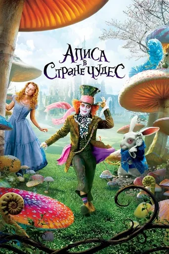

Алиса в стране чудес 2010
Жизнь 19-летней Алисы Кингсли принимает неожиданный оборот. На викторианской вечеринке, устроенной в её честь, Алисе делает предложение Хэмиш, богатый, но глупый сын лорда и леди Эскот. Не дав ответа, девушка убегает и идёт за кроликом, замеченным ею на лужайке. Кролик как кролик, вот только он одет в камзол и всё время смотрит на карманные часы. Алиса гонится за Белым Кроликом через весь луг и видит, как он исчезает в кроличьей норе. Затем, неожиданно, Алиса падает туда сама, летит вниз по странному, сказочному туннелю и приземляется в круглом зале со множеством дверей. Выпив из бутылки с надписью «ВЫПЕЙ МЕНЯ», она уменьшается в размерах, а откусив от пирожного с надписью «СЪЕШЬ МЕНЯ» — вырастает. Наконец, миновав череду злоключений, Алиса попадает через одну из дверей в чудесный фантастический мир, который его обитатели называют Подземной страной. Там её ждёт целый парад колоритных персонажей: хвастливая Соня, сумасшедший Шляпник, глумливый Чеширский Кот, накурившаяся кальяном гусеница по имени Абессалом, жутковатая Белая Королева и её злобная сестра, Королева Червей, вздорная и раздражительная правительница Подземной страны.
Открыть в каталогеДанные и постеры принадлежат их правообладателям. Этот продукт использует TMDB API, но не одобрен и не сертифицирован TMDB.